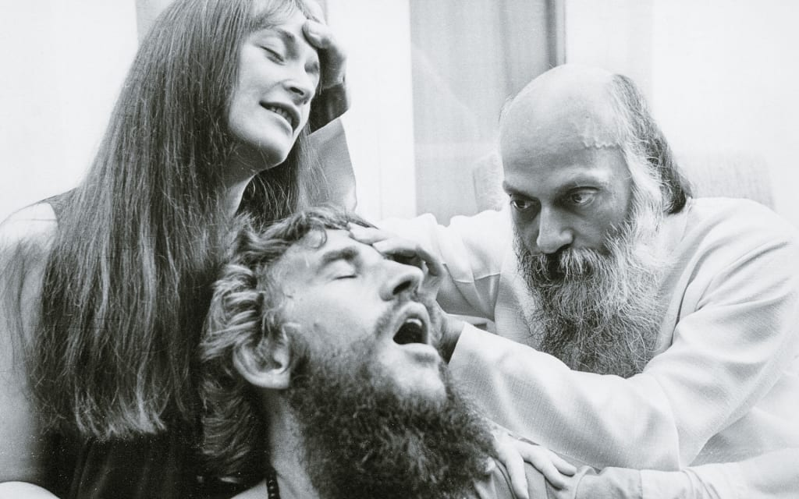
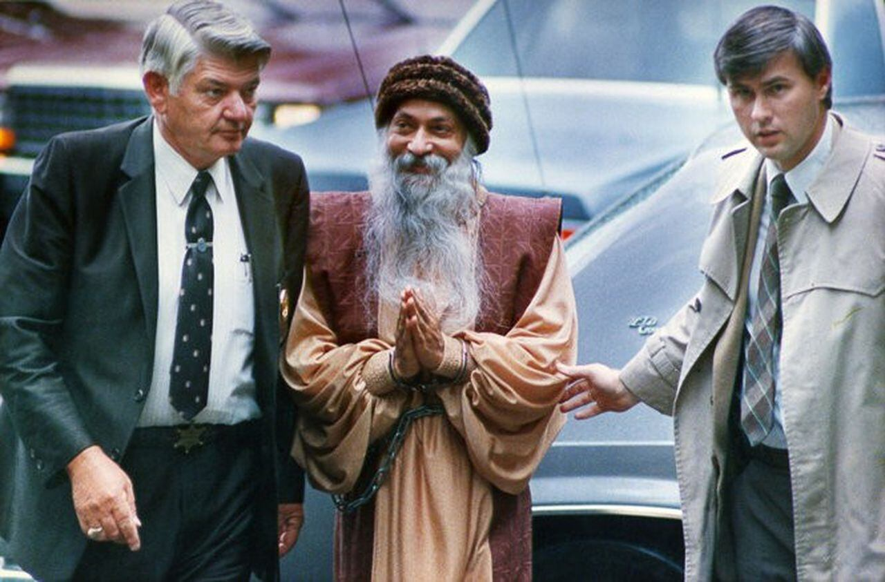
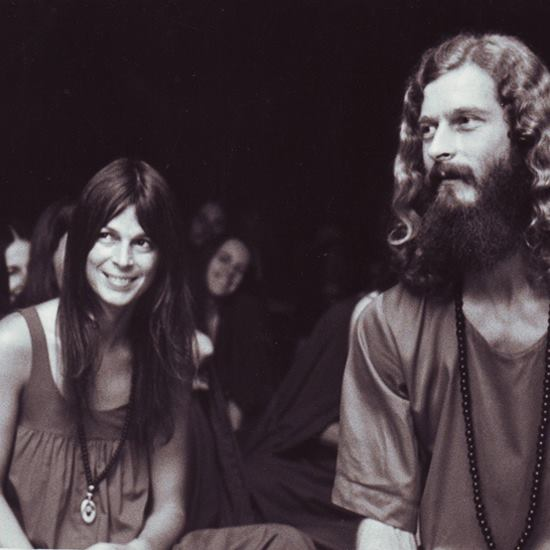
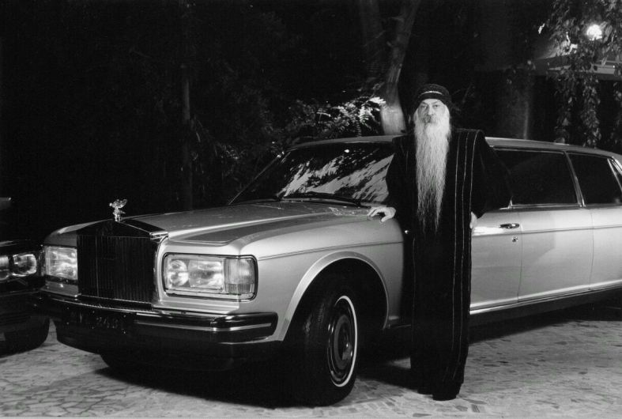
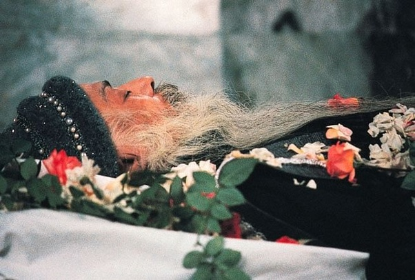
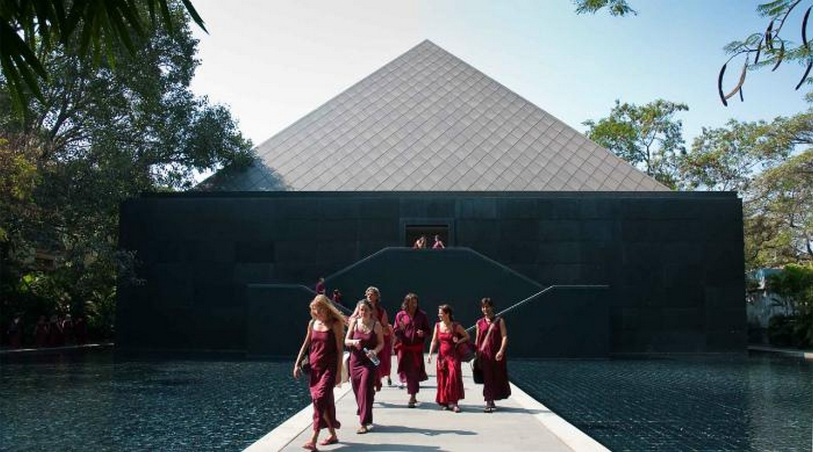

“Each person comes into this world with a specific destiny--he has something to fulfill, some message
has to
be delivered, some work has to be completed. You are not here accidentally--you are here
meaningfully.
There
is a purpose behind you. The whole intends to do something through you.”
― Osho
About
Osho, born on 11 December 1930 in Kuchwada, India, began his spiritual journey in
the 1960s
after
experiencing a profound spiritual awakening. He later gained recognition as Acharya Rajneesh and
eventually as Bhagwan Shree Rajneesh. Central to Osho's teachings was the concept of meditation as a means to achieve self-realization and spiritual growth. He developed numerous meditation techniques, including dynamic meditation, Kundalini meditation, and the "OSHO Active Meditations," which combine physical movement, breathing, and mindfulness to help practitioners achieve a state of awareness. Osho's philosophy emphasized living life to the fullest, embracing joy and celebration, while also advocating for a deeper understanding of oneself through introspection and meditation. One of the most controversial aspects of Osho's teachings was his unconventional approach to sexuality and relationships. He challenged societal norms and advocated for the freedom of expression in all aspects of life. In the 1970s and 1980s, Osho attracted thousands of followers from around the world to his ashram in Pune, India, where he delivered discourses, conducted meditation sessions, and engaged in dialogue with his disciples. However, his commune faced legal and social challenges, including conflicts with the Indian government and local authorities. In 1981, Osho relocated to the United States and established a new commune, Rajneeshpuram, Oregon. The commune's expansion and confrontations with the local community and government authorities led to legal troubles, including Osho's arrest and subsequent deportation from the United States and entering his name in the Interpol database under the label ‘Danger to National Security’. Despite the controversies surrounding him, Osho's teachings continue to influence millions of people worldwide. His emphasis on individual freedom, mindfulness, and spiritual exploration remains relevant to many seekers on the path of self-discovery. Osho passed away on January 19, 1990. When his doctor inquires whether they should prepare for cardiac resuscitation, Osho says, "No, just let me go. Existence decides its timing." leaving behind a legacy that continues to inspire spiritual seekers around the world.
Osho performing meditations on his disciples
Osho arrested by the FBI in United States 
Prince Welf Ernst of Germany who joined Osho
Osho with 1 of his 93 Rolls-Royce's
Osho's last picture before cremation rituals
OSHO International Meditation Resort, Pune
Ankur Raj